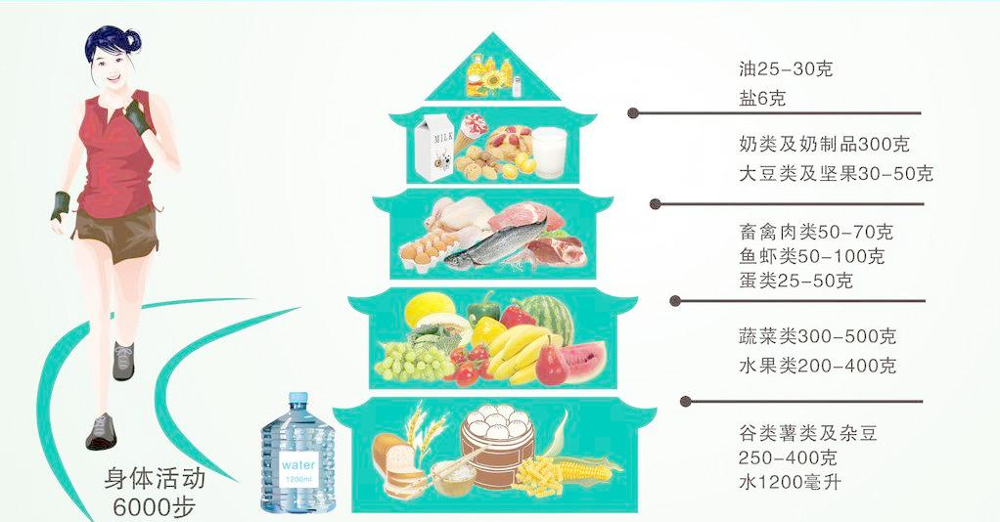

回顾了一下自己之前的这些博文，主题比较分散，有历史知识，有科普知识，有思维方法，也有学习和读书笔记。要说这当中的相同点，估计也就是不管内容是什么，目的都是希望把自己认为好的东西纪录并分享出来。到目前为止，分享的可以说都是一些思想和精神层面的东西，今天，就来一篇关于我们身体的文章吧。
面对当下快节奏的生活，特别是碎片式的互联网风格的生活，很多人往往会忽视自己的健康问题，我也是者其中之一。虽然每年的体检结果显示并无大碍，但是自身的体感越来越明显，再也不能像年少时那样放任和透支自己的身体了，我们要想办法学会善待自己的身体。
其实要善待身体，就目前来看，并不需要像很多父母一辈的人一样特别的关注各种养生方法，收看各种的养生节目，并奉那些所谓的专家的指导为日常生活的准则。而是只要做好最基础的几个方面就很不错了，一旦我们可以做到合理膳食，可以养成良好的睡眠习惯，可以通过合理的运动来保持自己的体型，可以注意平时生活中的食品安全，可以从现在开始就注意防范各种慢性疾病，可以在身体出现问题的时候合理用药、正确就医，那么我们的身体就能持续的保持健康和活力。
合理膳食
你吃的健康吗？ 说到吃，人人都会！更是有很多人喜欢以吃货自称。然而，你真的会吃吗？我们不光要吃的饱，还要吃的巧，也就是我们经常会听到的每日饮食要均衡，应该尽量向下面的膳食宝塔靠拢。

在日常摄取食物的时候，要特别注意反式脂肪酸，大量摄入的话会增加患心血管疾病、中风和糖尿病的风险。一般来说，松软香甜、脆、滑的多油食物含有反式脂肪酸，比如：威化饼干、夹心饼干、奶油蛋糕及面包、炸薯条、奶茶、某些代可可脂巧克力等。炒菜时油在高温或长时间加热下也会产生反式脂肪酸。我们可以仔细阅读包装上的食品配料表，含氢化植物油、氢化棕榈油、人造奶油、植物奶油、起酥油、转化脂肪、麦淇淋的食品都含有反式脂肪酸。
我们平时最好还要注意对盐的摄取，过量食盐会导致高血压！每人每天食盐摄入不应该超过5克，而已经患有高血压和心脑血管疾病患者食盐的摄入量应当更少。可以通过使用限盐勺、低钠盐、低钠酱油来减少盐的摄入。要少吃腌制加工食品，比如咸菜、腌菜、香肠、腊肉、咸鱼等。购买食物时可以通过营养成分表，刻意选择一些含钠低的食物。特别需要注意的有一些食物虽然不咸，但是含盐量也不低：花生酱、番茄酱、香肠、面包、鸡翅、奶酪、牛肉干、油条、饼干、味精、鸡精、方便面、薯条、爆米花。
良好睡眠
良好的睡眠是衡量健康的一个重要的指标。根据世界卫生组织的统计，全球有27％的人经常失眠，而我国有近一半的人会出现睡眠障碍，失眠和睡眠障碍被列为人类最大的健康问题之一。
睡眠好，可以消除疲劳，恢复体力；可以增强免疫能力，促进生长发育；可以提高智力和记忆力。而相反的，有近90种疾病与长期失眠有关，三分之一的高血压可能是不良睡眠习惯引起的，20％的心脏病是由失眠引发的，睡眠不足会增加患肥胖症和糖尿病的风险，另外会使注意力和记忆力下降，加速衰老。
睡多久是合理的呢？成年人每天要保持7～8小时的睡眠时间，儿童9～10小时，老年人5～6小时，具体时间还会因人而异，关键看睡眠后精神是否充沛。最好是可以抓住黄金睡眠7小时，也就是晚上11点到早晨6点。睡眠也不是越多越好，睡眠过多会导致中枢神经系统长期处于抑制状态，增加患心脏病和脑血管栓塞的风险。
可以努力养成以下几点良好的睡眠习惯：
1.每日按时上床入睡和起床。
2.不强迫自己入睡。如躺在床上三十风中仍睡不着，就起床做些温和的活动，直到想睡了再上床。
3.维持舒适的睡眠环境。
4.避免使用床或卧房为其它活动的场所，如看电视、玩电脑。
5.晚餐后禁喝咖啡、茶、可乐、酒喝抽烟，少喝水及饮料。
6.睡前小点心有助睡眠，但不宜太饱。
7.每日规律运动，睡前做温和及放松身心的活动，如泡热水澡等，切记睡前两小时剧烈运动。
8.应有规律及充满活力的生活，积极参与社交活动。
是尽量避免以下几点不好的睡眠习惯：当夜猫子，在床上看书、玩电脑，使用不好的床垫，亮着灯睡觉，晚上锻炼，睡前数绵羊。
运动与体重
坚持规律运动，保持健康体重，增强生命活力。
健康体重该怎么计算呢，成年人的健康体重可以用国际通用的体质指数（BMI）来衡量，计算公式为：
BMI=体重（千克）／身高的平方（平方米）
体重正常的成年人BMI在18.5~23.9kg/m2之间；低于18.5 为体重过轻，24～26.9之前为体重过重；超过27为肥胖。
举例：小明身高170，体重65kg，那么小明的BMI=65/1.7^2=22.5，属于正常范围内。
如何保持健康体重？进食量和运动是保持健康体重的两个主要因素，食物提供人体能量，运动消耗能量。如果进食量过大而运动量不足，多余的能量就会在体内积存为脂肪，造成超重或者肥胖；相反若食量不足，可能因能量不足一起体重过低或者消瘦。
所以适量运动很重要。健康人需要运动，规律运动能起到预防疾病的效果，已经患肥胖、高血压、糖尿病灯生活方式相关疾病的人群，更需在专业指导下通过运动来辅助治疗和康复。
适量运动包含三要素：
一，时间。每次锻炼要按照以下顺序进行：准备活动5～10分钟、正式运动30分钟以上、整理放送活动5～10分钟。中等强度下运动的持续时间30～60分钟。正式运动时间越长，准备和整理活动过也相应延长。
二，强度。适当的运动强度为运动过长中微微气喘、适当出汗、可以交谈。以运动中的心率（脉搏）来判断运动强度，合理的强度可自行用公式推算。推算公式：合理心率＝170－年龄。例如，55岁的人，运动时心率保持在115次／分钟水平为好。
三，频度。一般每星期锻炼的次数以3～5次为宜。
那最好运动方式是什么呢？
答案是：步行。步行锻炼简便易行，效果显著，被公认为世界上最好的运动方式，尤其适宜于中老年人喝体弱者的健身养生。同时，步行也是增强心血管系统功能喝促进心肌梗死、中风康复的重要手段之一。
步行锻炼有以下两种方法：
健身步行：正确的方法应当是挺胸抬头，迈大步。手臂随脚步节奏摆动，并和呼吸节奏同步。每天1或2次，每次30～60分钟，一周累计步行5次。强度因人的体质不同而异，一般以薇薇出汗为宜。一般坚持3～5周可见到成效。
散步锻炼：散步前全身放松，适当活动，调匀呼吸至平静缓和，然后再从容展步。
没时间运动该怎么办？
1.除了打球、跑步、举杠铃灯外，日常生活中步行、骑车、走楼梯、做家务、遛狗、逛街等，都有一定的健身功效。
2.道路、楼梯、办公场所、居家住地都可以变成健身场所，上下班路上、工间、课间，也是锻炼的好时机。
运动前后有以下注意事项：
1.运动前要做充分的准备活动，包括热身活动和拉伸活动，有效预防肌肉拉伤等活动损伤。
2.体育运动容易出汗，因此运动时应少量多次喝水。
3.运动后要进行整理放松，防止疲劳产生。
4.切忌空腹运动，但运动前后半小时不宜进食。
食品安全
说到食品安全最重要的是注意以下五个要点:
1.保持清洁－餐前便后要洗手，洗净双手再下厨，饮食用具勤清洁，昆虫老鼠要驱除。
2.生熟分开－生熟食品要分开，切莫混杂共保存，刀砧容器各归各，避免污染惹病生。
3.烧熟煮熟－肉禽蛋品要煮熟，贪吃生鲜不安全，虫卵病菌需杀尽，再度加热也要足。
4.注意存放－熟食常温难久藏，易腐视频入冰箱，食前仍需加温煮，冰箱不是保险箱。
5.材料安全－饮食用水要达标，果蔬新鲜仔细挑，保质期过不再吃，莫为省钱把病招。
生活中如何保持清洁？
一是要勤洗手：饭前、便后，处理生肉、鱼虾或者家禽等食物，咳嗽、打喷嚏、擤鼻喉均应洗净双手。
二是要保持餐厨用具清洁：
1.要保持操作台面和餐厨用具的清洁和干燥。
2.用洗洁精洗涤餐具时，一定要用流动清水冲洗，以防洗洁精残留。
3.餐具雨盛放熟食的容器应于上衣红后及时清洗消毒，消毒方式有开水浸烫消毒、煮沸消毒、消毒碗柜消毒等。
4.消毒后的餐具应存放在干燥、卫生的碗架上。
如何保持生熟食品分开呢？
1.购物时，将生的畜禽肉和水产品等食物与其它食品分开。
2.家中用来接触生的食品和熟的食品的刀、砧板等用具应分开使用。
3.盛装过生菜、生肉的容器，需经彻底清洗消毒后才能盛装熟菜、熟肉。
4.分别使用不同的容器存储生品、半成品和熟品，以避免生熟交叉污染。
5.在冰箱内存放食品时，一定遵循「上熟下生，上素下荤」的原则；并尽量放在带盖的容器中，或者用塑料袋、保鲜膜包裹。
细菌繁殖需要在一定的温度条件下，在10～60度温度范围病菌生长繁殖较快，使食物变质，因而10～60度被称为「食物的危险温度」，其中37～42度最危险。未食用完的饭菜应及时在冰箱中冷藏，但冷藏不应超过3天。熟食在危险温度下超过2小时的，应先确认食物是否变质，若未变质应充分加热后方可食用，但重复加热最好不要超过1次。
那应该如何确定食物烧熟煮透呢？
大多数细菌和病毒不能耐受高温，可通过加热杀灭。加热食物时，其中心温度达到70度以上并保持30秒，即可确保食用安全。
可以用以下办法使食物达到烧熟煮透的状态：
1.烹饪畜禽肉直到汁水变清、肉内不再有粉红色。
2.烹饪蛋盒海鲜直到全部达到滚烫温度。
3.烧汤或炖菜，煮至沸腾，并持续煮沸至少1分钟。
各种原因导致的加工操作不当，如追求食品的鲜嫩、烹调时间不够等，都会引起食物未烧熟煮透，应当避免。
食物应该如何存放？
1.鱼、肉、蛋、禽和大豆制品等富含蛋白质的食物－低温存放
2.干制食品（如大米、面粉、坚果等）－密封容器或包装袋内
3.食用油－避光、密封、阴凉和防水
4.蔬菜－5～7度，适当的空气疏通
5.蛋类－低温存放
哪些食物不能吃？
河豚、不新鲜的青皮红肉鱼、野蘑菇、发芽的马铃薯、发苦的夜开花、鲜黄花菜、鲜木耳、未烧熟煮透的四季豆、未煮沸的豆浆、生蜂蜜
慢性病
什么是慢性病呢？
慢性病是一组发病潜伏期长，一旦得病，不能自愈，而且也很难治愈的非传染性疾病。生活中最常见的四种慢性病是心脑血管疾病（如心脏病和中风）、癌症、慢性呼吸道疾病（如哮喘）、糖尿病。
我国慢性病的确诊患者超过2.6亿，因慢性病导致的死亡占到总死亡的85％，45％的慢行病患者死于70岁之前。我国高血压的患者比例达20％，糖尿病患病率接近10％，成年人超重和肥胖比例达38.5%。全国每天有8550人成为癌症患者，每七到八人之中就有一人死于癌症。
吸烟、缺乏运动、不健康饮食和饮酒是导致慢性病的四个主要原因。我国有3亿人吸烟，80％的家庭人均食盐和食用油摄入超标，18岁以上成年人经常参加运动的比例不到12％。
慢性病能防治吗？慢性病在很大程度上可以预防，即控制上面说到的几点因素，如果这些因素都被消除，那么大约70％的心脏疾病、中风和糖尿病以及40％的癌症将得以预防。实践证明，很多的慢性病可以通过改善生活方式和科学的健康管理的到控制和康复。具体的说要改变「重治轻防」的意识，培养科学健康的生活行为和习惯，做到戒烟、限酒、合理膳食，积极参加体力活动，积极参加健康管理，定期体检，做的疾病早发现、早治疗。
常见慢行病之糖尿病。
长期高血糖可引起多种器官，尤其是眼、心、血管、肾、神经的损害，导致残废或早亡。我国每3名糖尿病患者中，就有1名不知道自己患有糖尿病。约三分之二的糖尿病患者没有进行足够的血糖控制。
哪些人容易得糖尿病呢？年龄一般在45岁以上，本身超重或肥胖，或者有巨大儿（出生体重大于4kg）生育史，有家族史，患有心脑血管疾病（高血压、冠心病、高脂血症，脑卒中），平均每天静坐时间超过6小时，或者患有多囊卵巢综合症的女性。
可以采用以下方式预防糖尿病：控制体重、适量运动、合理饮食、良好心理、戒烟限酒。糖尿病人要注意自己的饮食，血糖控制较好时可以适量吃水果，吃水果的同时要减少主食的量，可以在两餐之间或睡前吃点水果，吃完后可适度运动，要选择含糖量低的水果和食物，有条件的可以在进食后2小时测一下血糖和尿糖，帮助自己了解不同食物对自己血糖的影响。
常见慢行病之脑卒中。
脑卒中就是我们常说的脑中风，包括血管阻塞（缺血性中风）和血管破裂出血（出血性中风）两类。
哪些人容易的中风呢？一下项目超过3项的就算是高危人群了：高血压、血脂异常、糖尿病、房颤、吸烟、缺乏运动、超重或肥胖（BMI大于26）、有中风家族史。
可以用国际通用的AST口诀识别早起脑卒中：
Face（脸）：笑一笑，看嘴歪不歪。脑卒中患者脸部不对称，无法正常微笑。
Arm（胳膊）：举起双手，看是否有肢体麻木无力。
Speech（言语）：请患者重复说一句话，看是否语言表达困难或口齿不清。
Time（时间）：出现上述3条中的任意一条或多条，立刻拨打120，并明确纪录发病时间。
脑卒中院前急救应控制在60分钟内，做好院前急救60分钟比院内抢救更关键，院前家庭急救有以下三点：
1.在病人倒下处就地抢救，若必须移动时千万小心，切记对病人摇晃和前后弯动头部。保持仰卧，头部略向后，不要垫枕头，注意保暖。
2.病人呕吐时，脸朝向一侧，让其吐出，以防堵塞呼吸道。病人抽搐时，迅速消除周围有危险的东西。用手帕包着筷子放入口中，以免咬伤舌头。有大小便失禁者，帮其脱去裤子，垫上卫生纸。
3.保持室温暖和，注意空气流通。
合理用药
今天不合理用药，明天将无药可用
合理用药的原则是安全、有效、经济。最小风险＋最有效药物＋尽可能低的费用＝最大治疗效果。
许多药物会与酒精反应，包括感冒药、抗生素、降糖药、降压药、阿司匹林、安眠药、精神类药物、抗癌药等。因此在用药期间及停药7天内不要喝酒及含酒精饮品。茶叶不宜与铁剂、钙剂、洋地黄、地高辛、多酶片、某些抗生素及安眠药等药物同服。补锌、补铁时不能同服牛奶。补钙时不能同服咖啡。
要注意以下用药误区：
吊盐水最有效？输液主要用于危重或特殊病人，见效快，但不良反应发生率和严重程度要高于口服和肌肉注射，严重者可危机生命。所以患者应当坚持「能吃药不打针，能打针不输液」的原则。
药用的越多效果越好？用药要能少用就不多用，避免同时服用多种药物，防止不同的药物相互作用产生毒性反应，影响疗效和健康。
一生病就吃药？「是药三分毒」，任何药物都有不良反应的风险。其实有些病不需要服药，如普通感冒，只要注意休息、戒烟、多喝水、多吃新鲜蔬菜水果、常开窗，一般就可以自愈。
中成药可以随便吃？中成药讲究辨证用药，中医里一种疾病常常分好几个证型，每一种证型用药都是有区别的。随便服用中成药，不仅不能对症下药，还可能有害。
抗生素想吃就吃，想停就停？使用抗生素一般要严格按医嘱。不随意买药、不自行选药、不任意服药、不随便停药。使用抗生素必须按时、按量、按疗程服用。如果觉得有点效果就停药，已经好转的病情可能因为残余的细菌作怪而逆转。不合理使用抗生素会给细菌带来喘息和繁殖的机会，锻炼了细菌的耐药性。细菌耐药性的产生速度要远快于新药的开发速度，严重的耐药性会产生超级细菌，它们对人类的抗生素都有耐药性，最好会造成无药可用的局面。
保健食品可以治病？保健食品不能代替药品。患有明确疾病的人群，应在医生指导下接收正规治疗，不可迷信保健品的功效。
特殊人群用药有特别的注意要点。
孕妇：尽量少用或不用药物，包括中药及外用药。因为药物可透过胎盘影响胎儿。孕前或孕期患的疾病，如甲状腺疾病，糖尿病等，要在医师指导下使用药物治疗。
哺乳期妇女：某些药物会通过乳汁进入婴儿体内，用药前一定要咨询医生。
儿童：儿童不能随意参照成人用药。处方药必须遵医嘱使用，非处方药要认真阅读药品说明书，必要时咨询医生。
肝、肾疾病患者：就医时主动告知医生。用药前认真阅读药品说明书，避免或减少使用对肝脏和肾脏有毒性的药物，适量减少用药剂量。用药期间注意观察，检测肝肾功能指标，发现问题及时停药病咨询医生。
老年人：由于肝肾解读功能下降，用药剂量不宜过大。用药期间应注意观察用药后反应，让家人了解自己的用药情况。
特殊职业者：从事驾驶、操纵机器和高空作业前，避免使用抗感冒药、抗过敏药和镇静催眠类药物。这类药物服用后容易出现嗜睡、眩晕、反应迟钝、注意力分散等症状。
正确就医
看病只选大医院？其实没有必要，选择医院时应该考虑几个与疾病相关的主要因素：简单还是疑难杂症、轻中度或危重、病因明确或不明确、交通是否便利。
看门诊时需要掌握以下技巧：
描述全、不判断。要把自己所有症状向医生描述全面（如哪里感觉不舒服，持续了多久等等），但不要用病名代替症状，比如腿疼，就不要说「我坐骨神经痛」；乏力，不要说「肾虚」。
要淡定、不害羞。面对医生不要害怕，有难言之隐的病情或隐私也不要害羞，尽量清楚地告诉医生，医生会做到保密的。如果在进行妇科检查时，遇到男医生，不要紧张，一般情况下，男妇科医生在对女性患者做检查时，会同时有一位女性护士在场。
不化妆、慎着装。就诊前不可以化妆，不要穿连衣裙、连裤袜等，这样方便医生对疾病的诊断。
做检查、早准备。有些疾病需要空腹抽血化验，去医院前请不要进食和饮水。还有一些做检查的准备工作要做足，比如需要憋尿，可以带点水到医院喝。
理资料、清思路。患慢性病或疑难杂症，需要多次就医的患者，平时要把检查报告以及拍的片子等用档案袋收好，按照时间顺序整理好，带给医生的时候，也要条理清晰地描述自己的病情以及检查报告的基本情况。